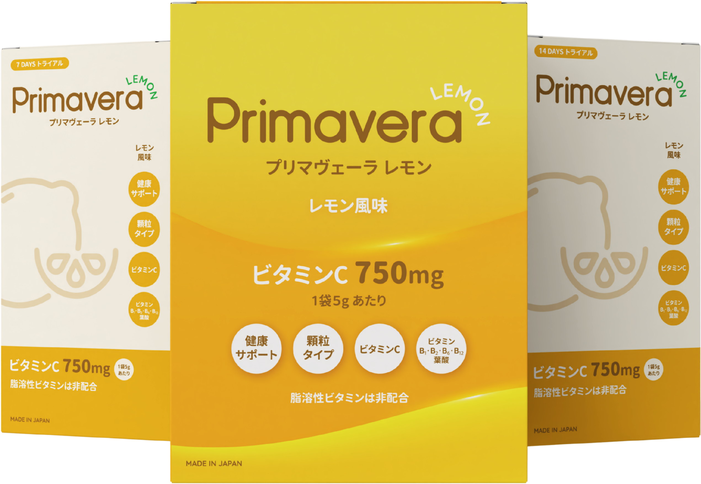
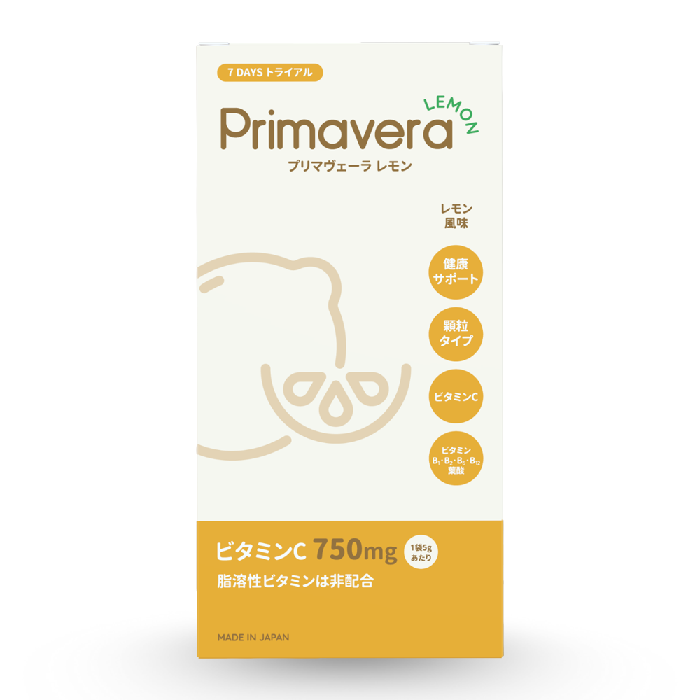
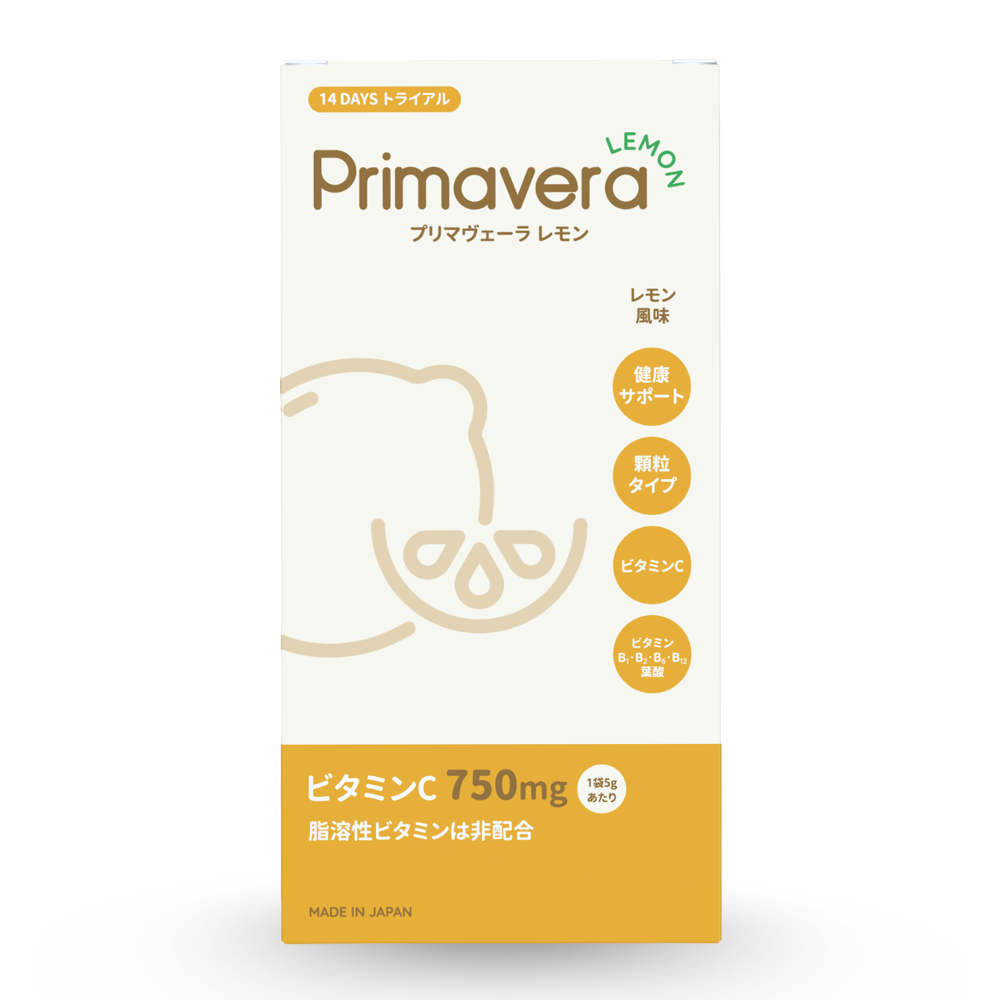
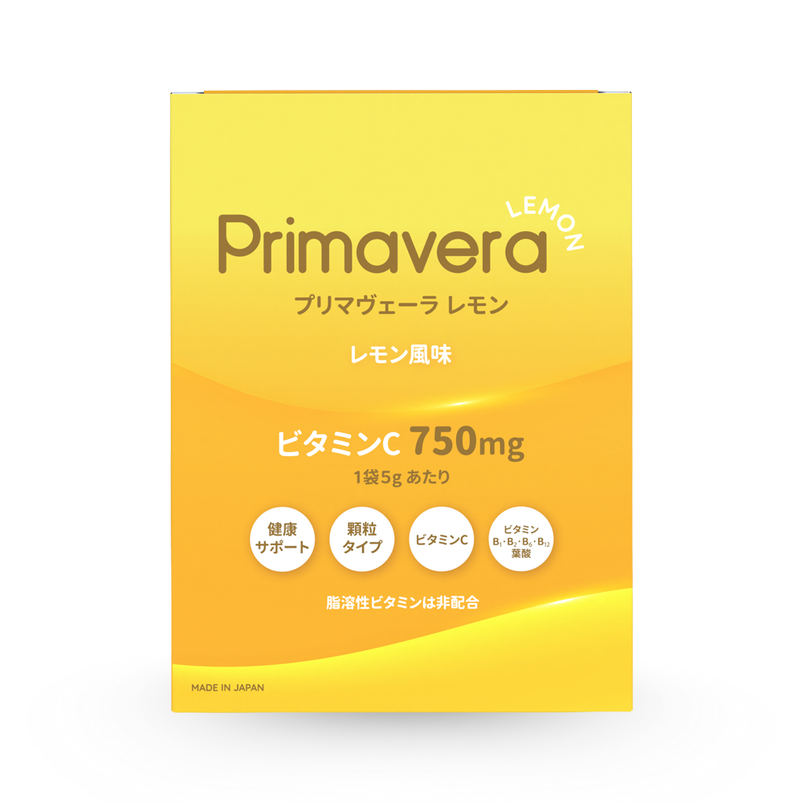
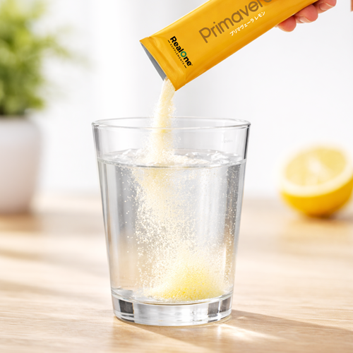
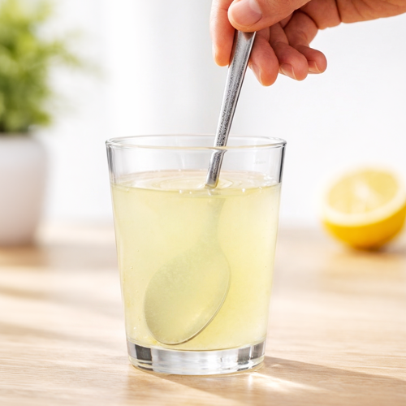
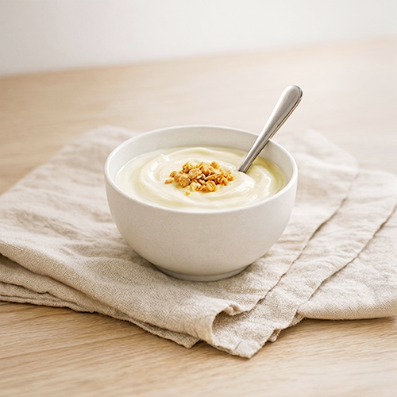
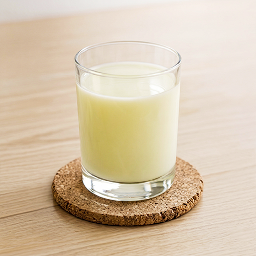

現代の食生活では、必要なビタミンCを毎日食事だけで補い続けることはほぼ困難です。体の小さなサインを、見逃さないでください。
寝ても疲れがとれない
風邪をひきやすい
肌がくすんで老けて見える
ストレスで心が疲れている
口内炎がよくできる
錠剤が苦手で続かない



どんなに良い成分でも、続けられなければ意味がありません。プリマヴェーラ レモンは「また飲みたい」と思える、爽やかな味わいにこだわりました。

約50ml〜100mlの水に溶かす
（お好みでご自由に水の量を増減していただけます）

軽くかき混ぜて完成。そのまま飲む！
人工甘味料ゼロなのに、ちゃんと甘い。キンと冷えた水に溶かすと広がる、爽やかなレモンの香りと自然な甘酸っぱさ。サプリメントらしくない、毎朝飲みたくなる一杯です。

混ぜるだけで爽やかなレモンヨーグルトに。朝食のお供にぴったり。

牛乳・豆乳に溶かせばまろやかな味わいに。子どもにも人気の飲み方。
医師が処方した科学的根拠と、飲み続けたくなる美味しさ。その両立にこだわり続けています。
慶應義塾大学医学部卒業後、米国ニューヨーク大学およびカンサス大学にて外科・胸部外科の研修を修了。フロリダ州マイアミにて心臓血管外科医として臨床経験を積む。帰国後は、亀田総合病院 心臓血管外科部長として高度医療に従事し、心臓血管外科分野の発展および後進の育成に取り組む。
現在は、これまでの臨床経験や国内外の研究知見をもとに、健康維持や栄養管理に関する知見の普及にも力を注いでいる。
2012年より、臨床現場での経験や栄養に関する研究知見を踏まえ、日常生活の中で無理なく取り入れられる栄養補助のあり方について検討を重ねてきました。その中で、「継続しやすい形で取り入れること」の重要性に着目し、開発されたのがプリマヴェーラ レモンです。
60歳で卵巣がんの手術後、再発が心配で飲み始めました。感染症にかかっても発熱や咳などの症状がまったく現れず驚きました。毎朝の習慣になっています。
月に1〜2個の口内炎が1週間続いていたのに、飲み始めてほとんど悩まされなくなりました。できそうな違和感があっても翌日には消えています。
服用してから風邪らしい風邪を全く引かず、インフルエンザにも罹ったことがありません。毎朝ジュース感覚で飲んでいて、止められなくなっています。
錠剤が苦手な私にとって、冷たい水でもミルクでもおいしく飲めるのが何より嬉しい。飲み始めてから体が軽くなった感じがしています。
口内炎・口角ヘルペスに悩んでいましたが、乳がん治療中も医師に確認のうえ継続。その間も口内炎に悩まされることなく1年が過ぎ、気分も安定しています。
甘くて飲みやすく、腸内環境が整った気がします。便通が良くなりました。別の治療もしていますが、肌がつるつるになってきているのを3ヶ月で実感しています。
いつ飲めばいいですか？
お好きなタイミングでお飲みいただけます。朝食後でも、運動前でも、就寝前でも。毎日続けることが大切です。
子どもでも飲めますか？
はい。砂糖・人工甘味料を一切使用していないため、安心してお飲みいただけます。
どんな味ですか？
すっきりと飲みやすいレモン味です。冷たい水に溶かすとより一層爽やかにお楽しみいただけます。
カロリーは高いですか？
低カロリーで毎日続けやすい設計です。カロリーを気にせず、無理なく習慣にしていただけます。